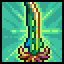

Терра-меч
Терра-меч (Terra Blade), он же Клинок Земли — меч, добавленный в версии 1.2. Стреляет при атаке. Его снаряды могут проходить сквозь врагов (максимум сквозь трёх), снаряды наносят урон составляющий 150% от урона самого меча и имеют время перезарядки — 0,5 секунды.
Терра-меч

Характеристики
Тип Оружие Меч
Урон 85, 172

Скорость 18 (Очень быстрая)
Атак/сек 3.3
Крит. шанс 4%
Отбрасывание 6.5 (Сильное)
Редкость Желтая
Продажа 20

Лучшая модификация Легендарный
Кол-во исследований 1 исследование
Рецепт
Достижения
С версии 1.3.0.1 при получении Терра-меча игрок получает достижение:Меч героя (Sword of the Hero)
Заполучить терра-клинок, выкованный из лучших клинков света и тьмы.
Интересные факты
Снаряды Терра-меча могли пролетать сквозь наклонные блоки шириной в 1 блок (баг, исправлено в версии 1.3).
Снаряды замедляются в жидкостях.
Снаряды Терра-меча летят примерно на 2000 блоков(не актуально с версии 1.4.4).
 Мифриловая наковальня
Мифриловая наковальня
 Орихалковая наковальня
Орихалковая наковальня